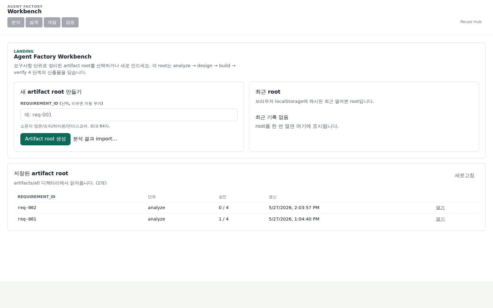
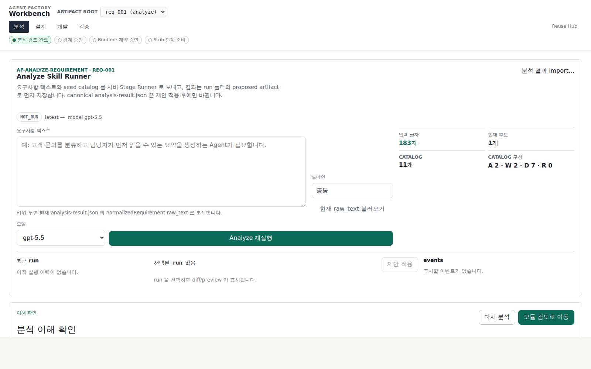
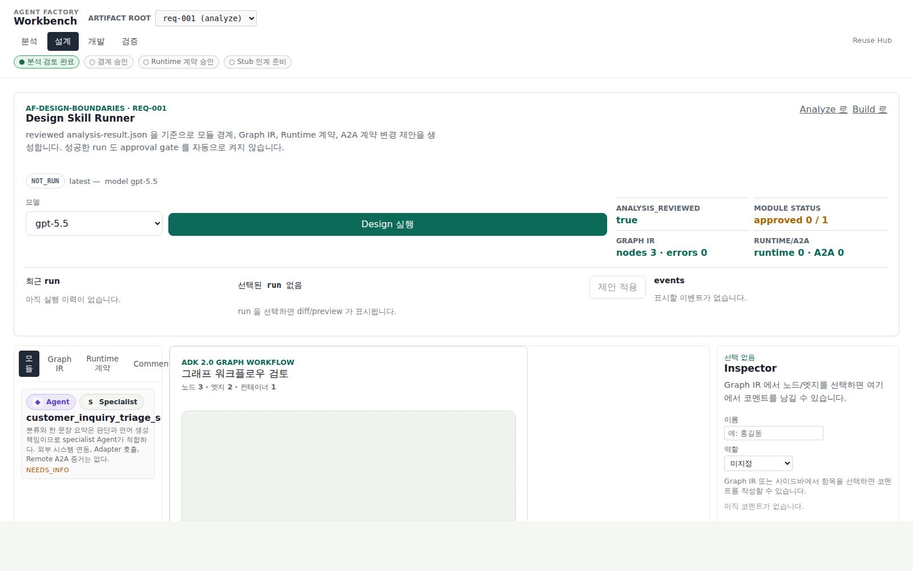
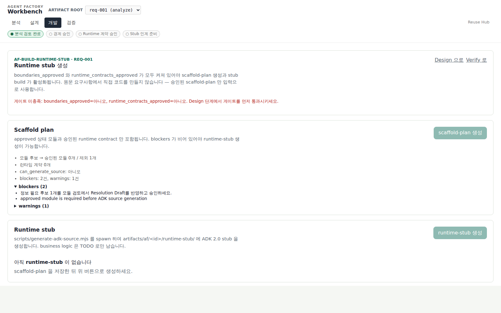
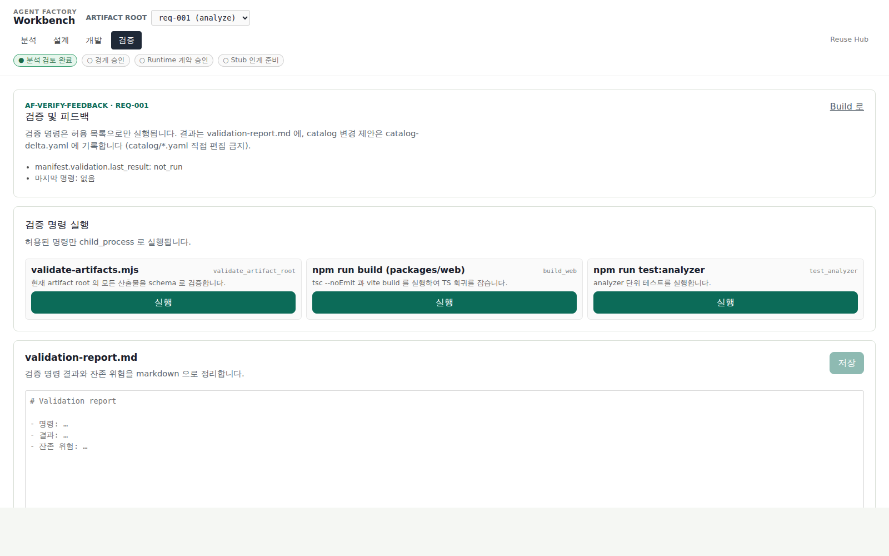
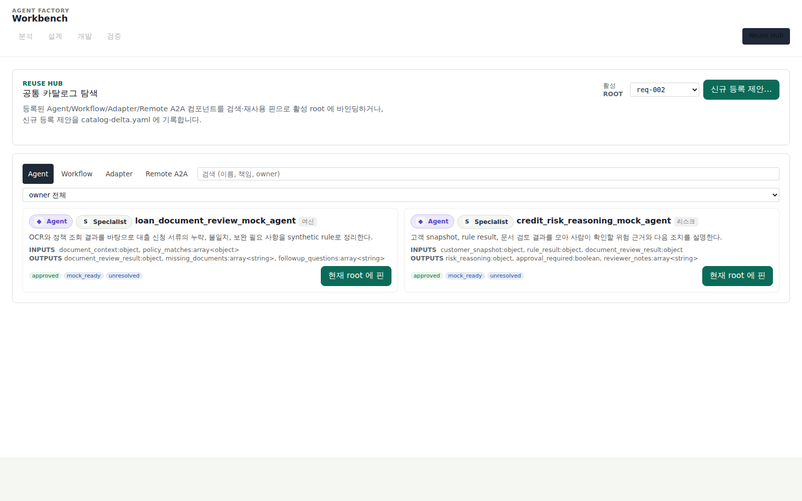

2. 워크벤치 한 바퀴
현재 Agent Factory 워크벤치는 Landing, 4개 스킬 스테이지(Analyze/Design/Build/Verify),
게이트 없는 도구 화면 실행, Reuse Hub로 나뉜다. Landing에서 artifact root를 고르고,
Reuse Hub는 별도 /catalog route에서 연다. 4개 스킬 스테이지는 공용 StageShell로
좌측 스텝 레일(1실행 · 2검토 · 3승인)을 두어 한 단계 안에서도 지금 할 일만 보이게 나눈다
(활성 스텝은 얕은 ?step= 쿼리). 스킬 실행 결과는 diff/preview 후 사용자가 적용해야
canonical artifact가 바뀐다.
현재 route 흐름
모든 route는 artifacts/af/<req-id>/를 단일 저장소로 사용한다. 브라우저 localStorage는 최근 root와 코멘트 작성자 캐시에만 쓰고, 분석 결과나 단계 상태를 저장하지 않는다.
화면별 책임
Landing — root 선택
새 requirement_id를 만들거나 최근 root를 연다. 외부 af-analyze-requirement가 만든 analysis-result.json import도 여기서 시작할 수 있다.
Analyze — 요구사항 분석 실행과 이해 확인
상단 Analyze Skill Runner가 raw requirement, domain, model, seed catalog를 서버 Stage Runner로 보낸다. 결과는 먼저 runs/analyze/<run-id>/proposed-artifacts/analysis-result.json에 저장되고, 사용자가 제안 적용을 누른 뒤에만 canonical analysis-result.json이 바뀐다.
Design — 경계 설계와 검토
analysis_reviewed=true가 되면 Design Skill Runner를 실행할 수 있다. 이 runner는 모듈 상태, candidate-level missing information, Graph IR, Runtime 계약, A2A 계약 변경을 patch로 제안한다. 성공해도 boundaries_approved나 runtime_contracts_approved는 자동으로 켜지지 않는다.
Build — Runtime Handoff 준비
스텝 레일로 1실행(scaffold-plan.json + runtime-stub/ source bundle 생성) · 2검토(stub 파일·implementation-handoff.md) · 3승인(stub_ready_for_followup)으로 나뉜다. raw requirement는 source generation 입력이 될 수 없다. ADK 런타임 연결/실행은 이 화면이 아니라 아래 실행 화면에 있다.
Verify — 검증 evidence 기록
승인 게이트가 없어 2스텝(실행·기록)이다. 고정 allow-list 검증 명령을 실행하고 manifest.validation.last_result, validation-report.md, catalog-delta.yaml을 갱신한다.
실행 — ADK 런타임 (게이트 없음)
/af/:reqId/run. runtime-stub/이 생성된 뒤 runtime-stub/.venv에 ADK dependency를 설치하고, 로컬 adk api_server --with_ui(8765)를 시작/중지하며, ADK 공식 dev UI(채팅·세션·이벤트·트레이스)를 새 탭으로 링크한다. 워크벤치 자체 챗은 만들지 않고 ADK가 제공하는 UI를 그대로 쓴다(iframe 임베드 아님). 승인 게이트가 없는 보조 도구 화면이라 afRunStageIds에 들어가지 않는다.
Reuse Hub — catalog 연결과 등록 제안
/catalog에서 reusable Agent/Workflow/Adapter/Remote A2A 계약을 검색한다. 현재 root 후보에 pin하거나, 새 등록 제안을 root의 catalog-delta.yaml에 append하고, 검토된 제안은 등록 승인 publish 경로로 반영한다. catalog/*.yaml은 직접 편집하지 않는다.
Stage Runner가 남기는 evidence
Analyze와 Design 실행은 같은 run folder 계약을 사용한다.
artifacts/af/<req-id>/runs/<stage>/<run-id>/
request.json
events.jsonl
result-summary.json
diff-summary.json
proposed-artifacts/
analysis-result.json
boundary-design.md
diagnostics.md
manifest.stage_runs는 최근 실행 요약이다. approval source of truth가 아니다.manifest.approvals.*가 계속 gate UI의 단일 기준이다.- validation 실패나 ETag conflict가 있으면 canonical artifact에 적용할 수 없다.
- 실패 run도 diagnostics와 함께 남아 원인 분석이 가능하다.
스크린샷으로 보는 현재 화면






처음 실행해보는 추천 순서
cd packages/web && npm run dev -- --host 0.0.0.0 --port 5173 --strictPort후http://127.0.0.1:5173/에서 워크벤치를 연다.- Landing에서 새 root를 만들고 Analyze route로 이동한다.
- Analyze Skill Runner에 raw requirement를 넣어 실행한다.
- run detail의 diff/preview를 확인하고 proposed
analysis-result.json을 적용한다. - 요구사항 수준 missing information을 수용한 뒤
analysis_reviewed를 수동 토글한다. - Design Skill Runner를 실행하고 proposed patch를 diff/preview 후 적용한다.
- 모듈 상태, Graph IR validation, Runtime 계약 readiness를 검토하고 approval gate를 사람이 직접 토글한다.
- Build에서 scaffold-plan과 runtime stub을 만들고, Verify에서 검증 evidence를 남긴다.
매뉴얼 브라우저 테스트는 고정 포트 5173에서만 한다. 다른 포트로 fallback되면 안 된다. 자세한 정책은 CLAUDE.md의 dev server reachability 절을 참고.